Trace requests through local balancers, safe deployments, DNS, CDNs, and anycast.
To a client, a load-balanced service can look like one powerful server: it has one familiar interface and accepts requests at a stable entry point. Behind that interface, a balancer selects one of several application workers and relays the exchange. The workers perform the expensive application work; the balancer mainly distributes and forwards it. The diagram makes the apparent single service expand into three workers without changing the client's request format. This is useful only if the selected worker can handle that request. If a session or unfinished operation lives exclusively in another worker's memory, routing to a healthy replica may still produce an incorrect or incomplete result.
Distributing equal numbers of requests does not necessarily distribute equal work. Suppose round robin sends one short metadata lookup to worker A, one large export to worker B, and another lookup to worker C. Each has received one request, but B may remain occupied long after the others finish. The diagram assigns different costs to equal request counts. Alternatives such as least-connections or weighted routing use other signals, but those signals are still approximations of useful available capacity. A persistent connection can carry very different amounts of work. Choose a policy based on the service's workload and observe completion latency, queueing, and utilization rather than congratulating the system merely for even counts.
A stable entry point also separates clients from worker membership. Workers can be added, removed, or replaced while clients continue using the service interface. However, the balancer and the dependencies behind the workers need their own capacity and failure plans. Several application replicas may still share one constrained database, and a single balancer can become a point of failure. State externalization, database scaling, routing, and redundancy solve related but distinct problems. Trace a request all the way through storage and back before claiming that doubling workers doubles throughput. Finally, define what happens to work already in flight when a worker disappears: routing new requests elsewhere does not automatically finish or safely repeat an interrupted write.
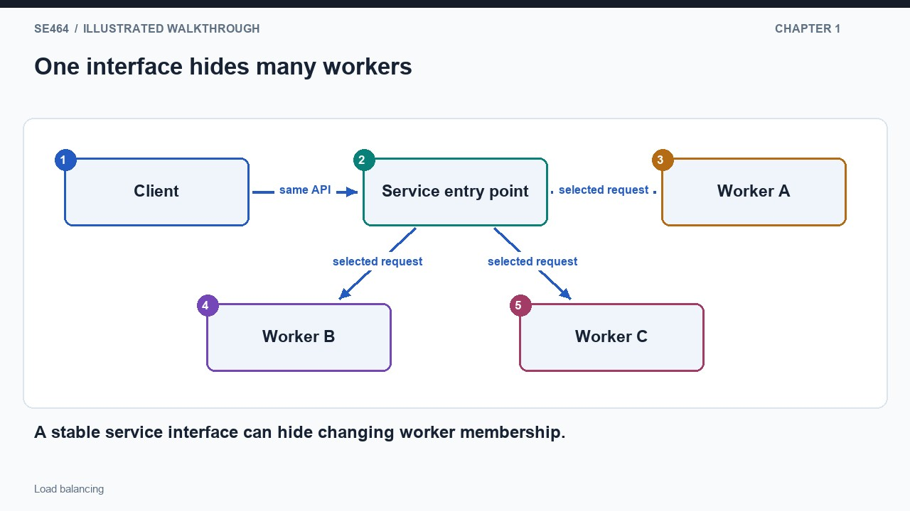
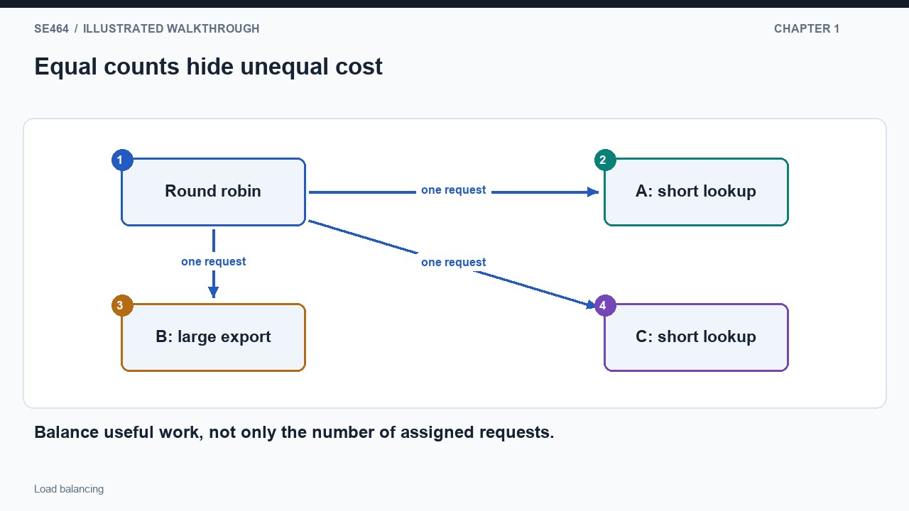
A layer-four balancer makes routing decisions from transport information such as addresses, ports, and connection state. In a NAT-based implementation, it rewrites addressing information and preserves a mapping so packets belonging to a connection continue to the chosen worker. The return path uses that mapping to make the response appear to come from the public service. The diagram follows one connection through the address translation instead of pretending that every packet is independently assigned to an arbitrary worker. This approach can support protocols beyond HTTP because it does not need to understand application resource names. NAT is one implementation technique, however, not the definition of every layer-four load balancer.
An HTTP-aware reverse proxy operates at a different boundary. It can inspect a request path and route image requests to one pool while sending account requests to another. For encrypted HTTP traffic, the proxy must terminate the incoming TLS connection before it can inspect the HTTP message; it may then establish a separate encrypted connection to the selected upstream. The diagram shows the path-based decision after TLS termination, with two possible destinations. That extra understanding enables features such as application routing, compression, and eligible response caching, but also creates configuration and processing work. The proxy must preserve the intended authentication, forwarding, and cache behavior across the boundary.
Do not turn historical performance examples into universal throughput limits. Hardware, packet sizes, TLS settings, connection reuse, buffering, and application behavior all change the comparison. A reverse proxy can stream data; it need not always hold an entire request or response before forwarding. Likewise, TLS termination does not require unencrypted internal traffic. Choose the layer based on the information the routing decision actually needs, then benchmark realistic requests and failure scenarios. If all connections are equivalent from the routing perspective, transport-level distribution may suffice. If paths, headers, or application policies determine placement, an application-aware component must inspect them somewhere in the request path.
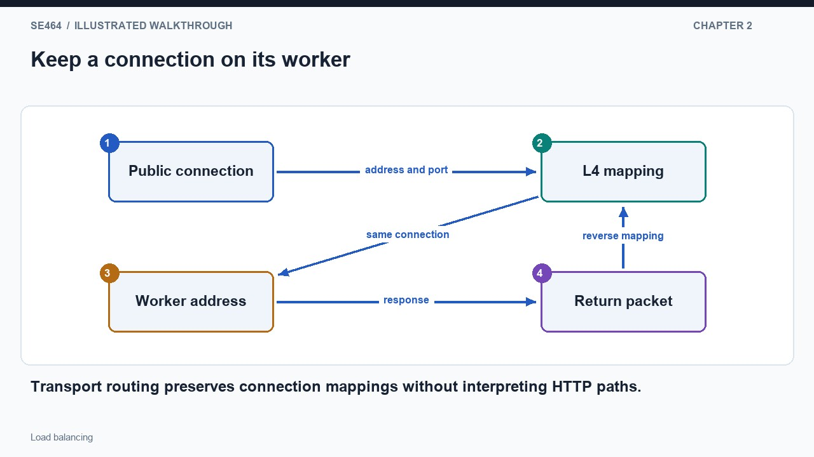
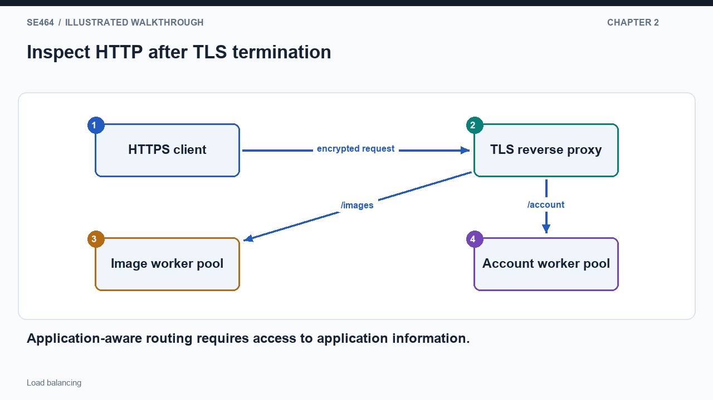
A rolling deployment replaces workers in stages so the service can remain available. First stop assigning new requests to one worker, then allow its existing work to drain within a defined deadline. Deploy the new version, verify that it is ready to serve, and only then restore it to the active pool before moving to another worker. The illustration separates draining from readiness because removing a worker from new assignments does not instantly end its in-flight work. This procedure needs spare capacity: if the remaining pool cannot handle the workload, a technically orderly rollout can still create excessive queueing and errors for users throughout the deployment.
Health checks provide observations that help the balancer decide where to send new work. A failed probe might indicate a crashed process, but it might also reflect overload, a network problem, or a failed dependency. The diagram shows a healthy response maintaining membership and repeated failed observations leading to removal. Thresholds avoid reacting to a single transient failure, at the cost of slower detection. During that interval, some real requests may still reach the affected worker. Explain how the client handles those failures and whether a retry is safe. Removing a worker changes future routing; it does not prove that previous writes did not take effect.
Old and new versions coexist during a rolling update. A client may send consecutive requests to different versions, and both versions may read or write the same database. Compatible API and schema changes are therefore part of deployment design. For example, adding a field before requiring every reader to use it is easier to roll out than abruptly renaming a required field. A deployment that creates a complete new pool before switching traffic uses more temporary resources but can simplify some cutover decisions. Neither strategy eliminates data migration risks. Define rollback behavior, maximum drain time, readiness criteria, and remaining capacity under one additional failure, then rehearse the process under representative load.
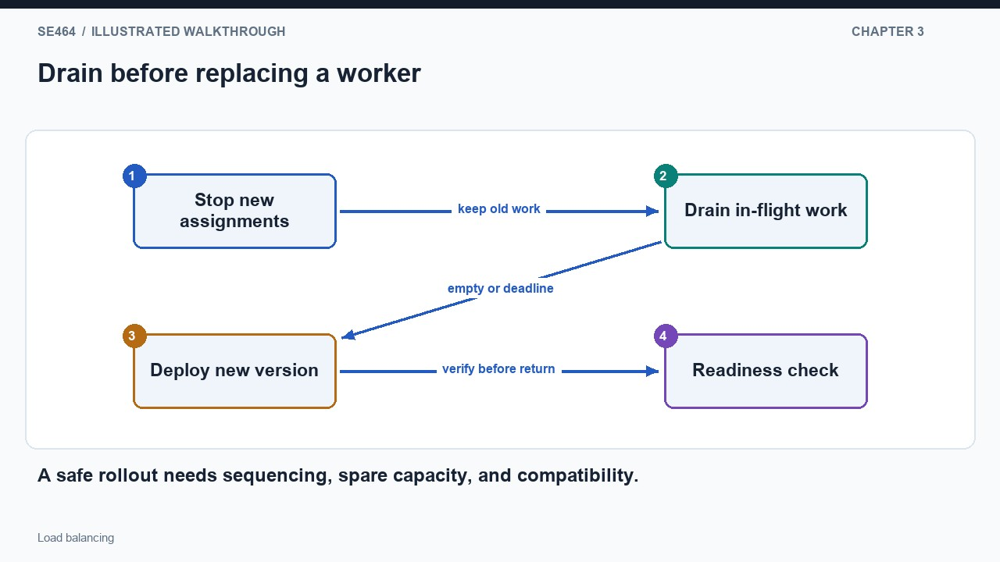
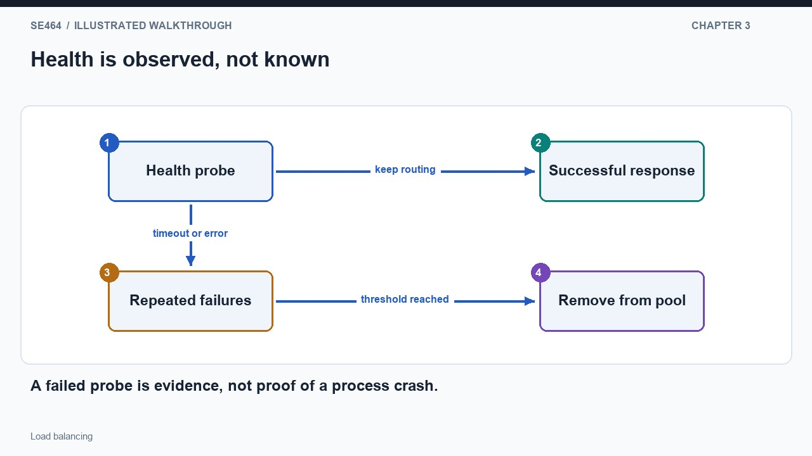
Before a client can contact a service, it often resolves a hostname to an address. DNS distributes this discovery work across a hierarchy and caches answers near clients, avoiding a single central lookup for every request. An authoritative service can provide different addresses to different resolvers or return several candidate addresses. The diagram separates a client's local resolver from the authority that supplies an answer when needed. Many clients may share one cached answer, so varying DNS responses does not imply perfectly even per-request load. After discovery, the client connects to the selected address; DNS is not necessarily consulted again for every application request on that connection.
Caching makes a DNS change gradual rather than instantaneous. Suppose a resolver stores Region East at time zero with a ninety-second TTL. At time twenty, the authority begins returning Region West to new lookups. A client asking the same resolver at time fifty can still receive East under the ordinary cache model, because that cached answer has not expired. At time ninety, the resolver can refresh and obtain West. The diagram puts the authoritative change above the still-valid cached copy to explain the overlap. Existing connections and client behavior add further complications, so a TTL is not a promise that every user switches regions at precisely one moment.
Geographic steering can use the apparent location of a resolver or available client-network information to choose a nearby region, but these are estimates rather than knowledge of each user's exact location. Combine global discovery with regional load balancing: discovery selects a region, and a local balancer selects a healthy worker there. Failover also needs the destination's data and dependencies to be ready. A name change cannot recreate missing writes or resolve competing writers in different regions. During an outage exercise, trace a fresh lookup, a cached lookup, and an already established connection separately. That exposes both the time needed to redirect traffic and the correctness assumptions required after it arrives.
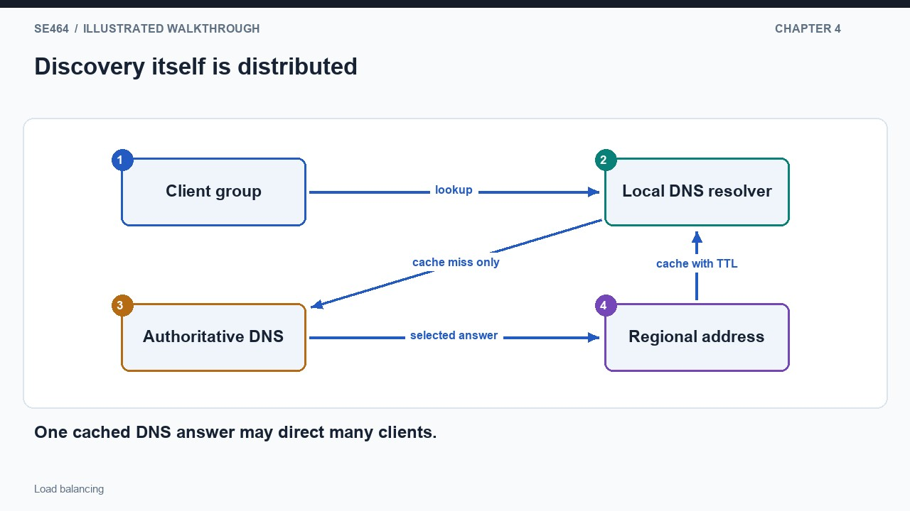
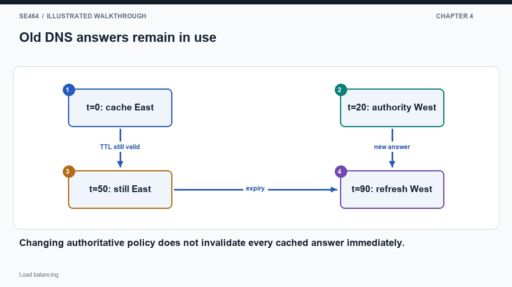
A content delivery network places caching proxies at multiple network locations. A nearby edge can answer an eligible repeated read without contacting the origin that owns the original content. Consider an immutable image identified by a versioned URL. The first edge request misses, fetches the image from origin, and stores a reusable response; later requests use that copy until its policy requires something different. The diagram separates edge storage from origin ownership. This can reduce both origin work and the distance travelled for popular content. A private account page is different: proximity does not make its contents safe to share, and its cache policy must reflect that difference.
Anycast solves a traffic-steering problem rather than a content-reuse problem. Multiple network locations advertise reachability for the same address, and routing chooses a path according to topology and policy. The illustration shows one destination address reachable through two sites, with the selected network path deciding which site receives traffic. This does not guarantee the geographically closest server or automatically make either site a cache. A CDN may combine anycast, DNS steering, and caching because those mechanisms answer different questions: where traffic goes, how a client discovers an endpoint, and whether a saved response may replace origin work. Keeping these roles separate prevents misleading claims about what any one layer guarantees.
For a simple load estimate, two thousand eligible requests per second with a ninety-two percent fresh-hit ratio leave about one hundred sixty origin fetches per second, before validation and unrelated traffic. The saving depends on eligibility and workload locality, not merely on having edge servers. Cache-Control remains authoritative: private excludes shared-cache storage of the whole response, even when a long max-age is present. Global routing also has convergence behavior, and route changes can affect established connections. Review an edge design by asking which objects are reusable, how changes become visible, what happens after an edge cache is empty, and how clients recover if routing changes during an exchange.
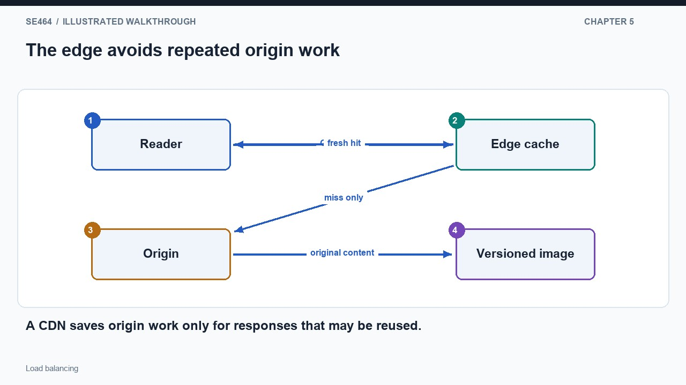
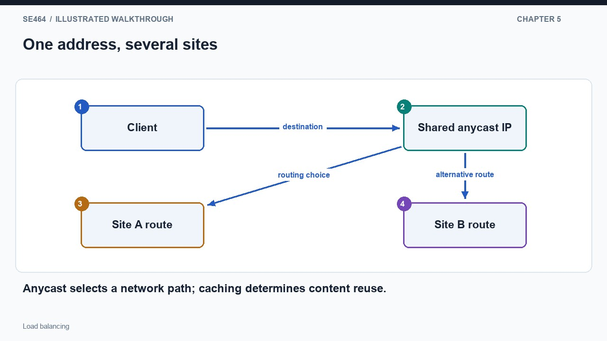
Design a digital archive for the day a popular collection is released. Public scans use immutable versioned URLs, so an edge cache can answer repeated reads. Reservations for the final research-room seat follow a different route: they must reach application logic and authoritative storage that enforces the booking rule. The diagram deliberately branches after the entry point rather than sending every operation through the same cache. Explain the cache key and eligibility of the read branch, then explain authorization and atomic state change on the write branch. A convincing architecture assigns each layer a responsibility instead of assuming that adding more routing boxes automatically improves correctness or capacity.
Now fail one worker while a reservation response is on its way back. The client times out and repeats the request, but the original write may already exist. At the same time, another user tries to reserve the final seat. The diagram shows the retry converging on the original operation record while the competing reservation meets the same capacity constraint. These are two different correctness concerns: deduplicating one user's repeated operation and preventing two users from winning the same seat. A load balancer can select another healthy worker, but the data and operation contracts must make that replacement safe. Describe the uncertain outcome explicitly before claiming the system has recovered.
Extend the exercise to a regional outage. Some clients will obtain a new DNS answer while others retain an old one or continue an existing connection. The destination region needs sufficient capacity and an acceptable data state before receiving writes. Then remove the edge cache and ask whether the origin survives the resulting miss load. Finally, take one worker out for deployment and check whether the remaining workers can meet the latency objective. These variations connect global discovery, local routing, state ownership, cache freshness, and spare capacity. Record the assumptions and testable failure scenarios alongside the diagram so the design can be evaluated rather than judged by its visual complexity.
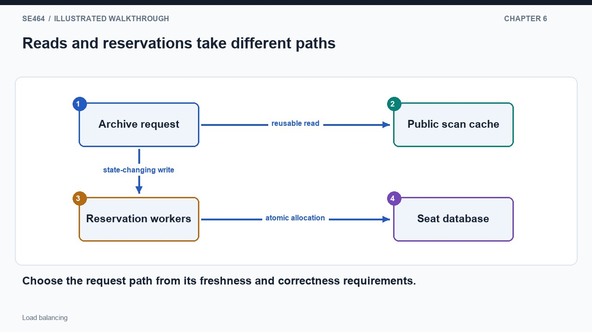
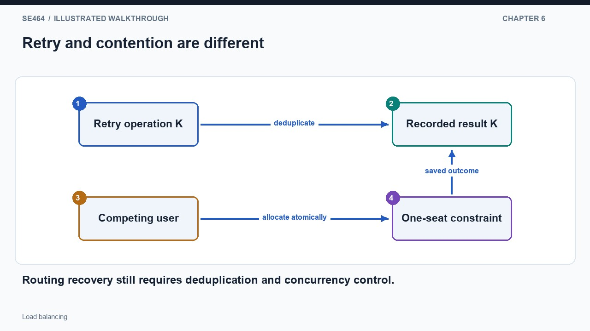